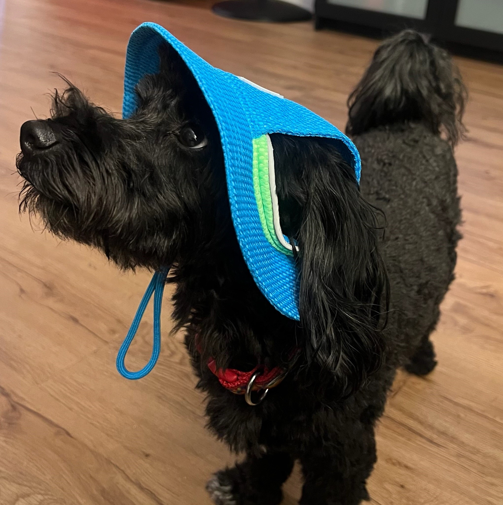

ShaWANNA Know?
My Dog



Cooper is Havanese poodle mix with a little bit of Schnauzer, and "lickerdoodle." This quirky 16lb dog, known as "Cooper Whiteshoes" thanks to his front white paws, is full of personality.
Cooper’s day starts with mandatory belly rubs before anything else, and he’s never shy about asking for a treat—especially by pressing his beloved talking buttons.
When it comes to skills, Cooper is a pro! He knows 25+ commands, from classic tricks like shake and roll over to using his talking buttons to demand treats.
He is even a star in a YouTube video "driving" his Porsche Macan to the tune of "Ridin' Dirty."
Cooper’s favorite activities include licking his favorite people, running around the yard, and riding shotgun on car adventures. Indoors, he loves lounging on the couch with his unicorn toys or barking at the mailman. He’s also a beach lover, running wild when sand gets between his paws.
Of course, Cooper is also full of funny quirks. From sneaking snacks to hiding 2-foot long Twizzlers around the house like they were toys, his antics keep everyone laughing. Despite his sneaky habits, he is a loving companion who brings joy to everyone he meets.